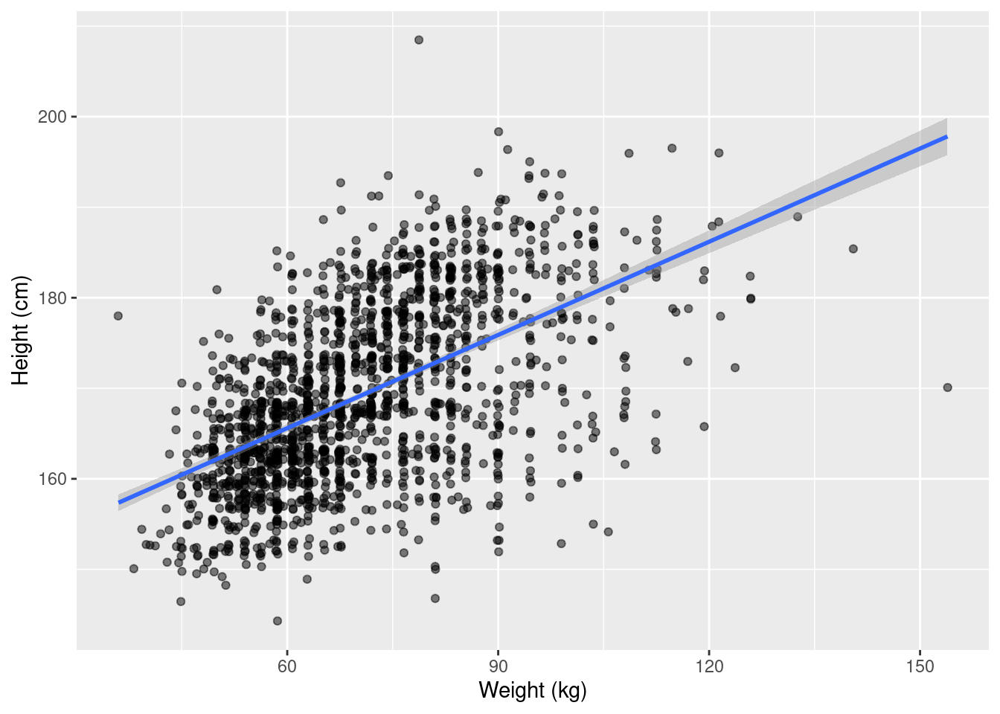

2 Introduction to R
During the first classes we discussed the basic structure of an R Markdown document and how we can mix R code and text to create documents.
A R Markdown document is a pure text file that you can open in any text editor (e.g. Notepad, Emacs, Kate, etc.). It consists of two parts: the header at the top of the file. The header starts with three dashes on a separate line and ends with three dashes on a separate line. Between the dashes you can specify different options in a yml format such as the author and title of the document, but these will be generally irrelevant for our course and we will ignore them.
In the body of the document we write code in code chunks that start with three backticks and end with three backticks. After the first sequence of backticks there is a language identifier which in our case will always be r.
It may be easier to work with R Markdown documents in R Studio’s Visual mode. After opening a R Markdown document, you will find two buttons (Source and Visual) just below the file name (below the save file icon). Click the Visual button to activate it. After that
you will be able to click on the Insert menu and add code chunks from Insert -> Code Chunk -> R.
To run a code chunk, find the green Run button on the right side of the chunk and click on it. You will see the printed output of the chunk below it. Note that some chunks do not print any output (e.g. chunks that only contain assignments).
You can find more information and video tutorials about R Markdown here.
An often used shortcut for inserting R code chunks is Ctrl-Alt-i. You can find more shortcuts and a concise overview of the elements of R Studio in the
R Studio Cheatsheet.
2.1 Arithmetic Operations
1 + 4[1] 53 - 2[1] 12 * 8[1] 162 / 8[1] 0.252^4[1] 162.2 Assignment
Very often we want to store a value in the memory of the computer so that we can reuse it later. In R we store values under names (variables) by using the assignment operator `<-` Shortcut for the assignment operator: Alt - (minus)
y <- 34
y - 40[1] -6Run this chunks and look at the global environment (right side of R Studio) to see it appear
in the list of objects.
2.3 Vectors
It is very common to group values that belong together in a single structure.
x <- c(1, 4)## Length, average, sum of a numeric vector
mean(x)[1] 2.5sum(x)[1] 5length(x)[1] 2## Documentation
?mean2.4 Character values
z <- "Hello, world!"2.5 Logical values and logical operators
There are two logical values: TRUE and FALSE. These emerge from logical operations and indicate whether some condition is fulfilled (TRUE) or not FALSE. You will find similar constructs in all other languages, where this type of data is commonly known as boolean or binary (i.e., only two values).
The basic logical operators in R are
## Less than
2 < 5[1] TRUE## Less than or equal
2 <= 5[1] TRUE## Greater than
2 > 5[1] FALSE## Greater or equal
2 >= 5[1] FALSE## Exactly equal
2 == 5[1] FALSE"Text 2" == "Text 2"[1] TRUEz == "Text 2"[1] FALSE2.6 Data
In most of our work we will use data tables containing variables (columns) that describe characteristics of observations (rows). Most of the time we will use tibble objects to hold the data. tibble objects are a modern rewrite of the data.frame (an older object type for storing data).
To use it we need to load the tidyvsere packages
library(tidyverse)── Attaching packages ─────────────────────────────────────── tidyverse 1.3.1 ──✔ ggplot2 3.4.2 ✔ purrr 1.0.1
✔ tibble 3.2.1 ✔ dplyr 1.1.2
✔ tidyr 1.3.0 ✔ stringr 1.5.0
✔ readr 2.1.4 ✔ forcats 1.0.0── Conflicts ────────────────────────────────────────── tidyverse_conflicts() ──
✖ dplyr::filter() masks stats::filter()
✖ dplyr::lag() masks stats::lag()In a limited number of cases we need to construct tables by hand. You can find out more about tibble here.
dt <- tibble(
## Shorthand syntax for creating a sequence of integers from one to five
id = 1:5,
y = c(2, 2.5, 3, 8, 12)
)
dt# A tibble: 5 × 2
id y
<int> <dbl>
1 1 2
2 2 2.5
3 3 3
4 4 8
5 5 12 Most of our data will come from external sources such as text files in a csv format. For the purpose of this course you don’t need to worry about reading these files, you will always have a starter code chunk that imports the data.
The earnings data set contains data on 1816 customers of a shopping mall. The customers have answered a short interview and gave information about their sex, age, ethnicity, annual income, weight and height.
We will use this data set to demonstrate some common operations and basic data summaries.
earnings <- read_csv("https://raw.githubusercontent.com/feb-uni-sofia/econometrics2021/main/data/earnings.csv")Rows: 1816 Columns: 15
── Column specification ────────────────────────────────────────────────────────
Delimiter: ","
chr (1): ethnicity
dbl (14): height, weight, male, earn, earnk, education, mother_education, fa...
ℹ Use `spec()` to retrieve the full column specification for this data.
ℹ Specify the column types or set `show_col_types = FALSE` to quiet this message.- height (numeric): Height in inches (1 inch = 2.54 cm)
- weight (numeric): Weight in pounds (1 pound \approx 0.45 kilograms)
- male (numeric): 1: Male, 0: Female
- earn (numeric): Annual income in USD
- earnk (numeric): Annual income in 1,000 USD
- ethnicity (character): Ethnicity
- age (numeric): Age
First we will convert the height and weight measurements from their original scales (inch, pound) to cm and kg. We will create two new columns with informative names using the mutate function.
earnings <- mutate(
earnings,
height_cm = 2.54 * height,
weight_kg = 0.45 * weight
)
earnings1 <- select(earnings, height_cm, weight_kg)The same code can be rewritten in a more convenient way using pipes.
earnings1 <- earnings %>%
mutate(
height_cm = 2.54 * height,
weight_kg = 0.45 * weight
) %>%
select(height_cm, weight_kg)Note that the object holding the original data is unaffected by mutate and select. The reason for this is that functions in R generally do not change their arguments. If you want to add the two new columns to the original data set earnings, you need to overwrite it with an assignment.
2.7 Basic data summaries
The first step in any data analysis is to gain an initial understanding of the context of the data and the distributions of the variables of interest. In this course our main focus will be on two features of the variables: their location and their variability (how different are the observations between each other).
2.7.1 Location
The most important measure of location for us will be the empirical mean of a variable (arithmetic average). Let i index the observation in our data set from the first (i = 1) to the last i = n. In our case n = 1816: the number of all interviewed customers. We can represent the values of some (numeric) characteristic (e.g., the persons’ weight) as a vector of values x = (x_1, \ldots, x_n). In this notation x_1 is the weight of the first customer in the data set (x_1 = 210 pounds). The arithmetic average is defined as the sum of all values divided by the number of observations:
\bar{x} = \frac{1}{n}(x_1 + x_2 + \ldots + x_n) = \frac{1}{n}\sum_{i = 1}^{n} x_i
Let us now compute the arithmetic average of weight and height. One way to access the columns of the data set earnings is to write the name of the data set and then after a $ sign the name of the column.
mean(earnings$height)[1] 66.56883mean(earnings$weight, na.rm = TRUE)[1] 156.3052Another measure of location is the (empirical) median. You can compute it using the median function.
median(earnings$height)[1] 66The result is a median height of 66 inches. This means that about half of the customers were taller than 66 inches.
2.7.2 Variability
The next important feature of the data is its variability. It answers the following question: how different are the customers between each other with respect to body height (for example). There are numerous ways to measure variability.
One intuitive measure would be the range of the data, defined as the difference by the maximal observed height and the minimal observed height
min(earnings$height)[1] 57max(earnings$height)[1] 82range(earnings$height)[1] 57 82max(earnings$height) - min(earnings$height)[1] 25Another measure is the inter-quartile range. The quartiles are defined similar to the median. To see this lets use the example of body height. The first quartile of height (25-th percentile and 0.25 quantile are different names for the same thing) is the height for which about one quarter of the customers are shorter than it. You can compute it with the function quantile.
quantile(earnings$height, 0.25)25%
64 About 25 percent of our customers were shorter than 64 inches.
The second quartile is the same as the median (two quarters).
quantile(earnings$height, 0.5)50%
66 median(earnings$height)[1] 66The third quartile is the height for which three quarter of the customers are shorter than it.
quantile(earnings$height, 0.75) 75%
69.25 In our case about three quarter of the customers were shorter than 69.25 inches.
The inter-quartile range is simply the difference between the third quartile and the second quartile.
quantile(earnings$height, 0.75) - quantile(earnings$height, 0.25) 75%
5.25 About half of our customers had a hight between the first quartile (64 inches) and the third quartile (69.25 inches). The inter-quartile range shows you the difference between the height of the talles person and the shortest person for the central 50 percent of the customers.
As the range, the inter-quartile range is a measure of variability.
The most important measure of variability and the one that will be central to our analysis is the (empirical) variance.
Definition 2.1 (Empirical variance) For a vector of values x = (x_1, \ldots, x_n) it is defined as the average (apart from a small correction in the denominator) squared deviation of the values from their mean.
S^2_x = \frac{(x_1 - \bar{x})^2 + \ldots + (x_n - \bar{x}^2)}{n - 1} = \frac{1}{n - 1} \sum_{i = 1}^{n}(x_i - \bar{x})^2: \quad \text{variance}\\ S_x = \sqrt{S^2_x} \quad \text{standard deviation}
Example 2.1 (Computing the empirical variance) Lets apply the formula from Definition 2.1 to a very simple example with just three values.
x_1 = -1, x_2 = 0, x_3 = 4
First, the empirical mean of these values is
\bar{x} = \frac{-1 + 0 + 4}{3} = 1
Now lets substitute these values in the definition of the empirical variance:
\begin{aligned} S^2_{x} & = \frac{(x_1 - \bar{x})^2 + (x_2 - \bar{x})^2 + (x_3 - \bar{x})^2 }{n - 1} \\ & = \frac{(-1 - 1)^2 + (0 - 1)^2 + (4 - 1)^2 }{3 - 1} \\ & = \frac{(-2)^2 + (- 1)^2 + (3 )^2 }{2} \\ & = \frac{4 + 1 + 9 }{2} \\ & = \frac{14}{2} \\ & = 7 \end{aligned} Using R to compute the same thing:
x <- c(-1, 0, 4)
x_avg <- mean(x)
((-1 - x_avg)^2 + (0 - x_avg)^2 + (4 - x_avg)^2) / (length(x) - 1)[1] 7There is also a special function var that can compute it from a vector
var(x)[1] 7The (empirical) standard deviation is simply the square root of the (empirical) variance.
S_x = \sqrt{S^2_x} = \sqrt{7} \approx 2.64
In R you have two options: take the square root of the result of var using the sqrt function or use sd (standard deviation) to compute the standard deviation directly.
sqrt(var(x))[1] 2.645751sd(x)[1] 2.645751The following contains code discussed during the classes without additional explanations
## Basic summaries for the whole tibble
earnings %>% skimr::skim()| Name | Piped data |
| Number of rows | 1816 |
| Number of columns | 17 |
| _______________________ | |
| Column type frequency: | |
| character | 1 |
| numeric | 16 |
| ________________________ | |
| Group variables | None |
Variable type: character
| skim_variable | n_missing | complete_rate | min | max | empty | n_unique | whitespace |
|---|---|---|---|---|---|---|---|
| ethnicity | 0 | 1 | 5 | 8 | 0 | 4 | 0 |
Variable type: numeric
| skim_variable | n_missing | complete_rate | mean | sd | p0 | p25 | p50 | p75 | p100 | hist |
|---|---|---|---|---|---|---|---|---|---|---|
| height | 0 | 1.00 | 66.57 | 3.83 | 57.00 | 64.00 | 66.00 | 69.25 | 82.00 | ▂▇▅▁▁ |
| weight | 27 | 0.99 | 156.31 | 34.62 | 80.00 | 130.00 | 150.00 | 180.00 | 342.00 | ▅▇▃▁▁ |
| male | 0 | 1.00 | 0.37 | 0.48 | 0.00 | 0.00 | 0.00 | 1.00 | 1.00 | ▇▁▁▁▅ |
| earn | 0 | 1.00 | 21147.30 | 22531.77 | 0.00 | 6000.00 | 16000.00 | 27000.00 | 400000.00 | ▇▁▁▁▁ |
| earnk | 0 | 1.00 | 21.15 | 22.53 | 0.00 | 6.00 | 16.00 | 27.00 | 400.00 | ▇▁▁▁▁ |
| education | 2 | 1.00 | 13.24 | 2.56 | 2.00 | 12.00 | 12.00 | 15.00 | 18.00 | ▁▁▁▇▃ |
| mother_education | 244 | 0.87 | 13.61 | 3.22 | 3.00 | 12.00 | 13.00 | 16.00 | 99.00 | ▇▁▁▁▁ |
| father_education | 295 | 0.84 | 13.65 | 3.25 | 3.00 | 12.00 | 13.00 | 16.00 | 99.00 | ▇▁▁▁▁ |
| walk | 0 | 1.00 | 5.30 | 2.60 | 1.00 | 3.00 | 6.00 | 8.00 | 8.00 | ▃▁▃▁▇ |
| exercise | 0 | 1.00 | 3.05 | 2.32 | 1.00 | 1.00 | 2.00 | 5.00 | 7.00 | ▇▁▁▁▃ |
| smokenow | 1 | 1.00 | 1.75 | 0.44 | 1.00 | 1.00 | 2.00 | 2.00 | 2.00 | ▃▁▁▁▇ |
| tense | 1 | 1.00 | 1.42 | 2.16 | 0.00 | 0.00 | 0.00 | 2.00 | 7.00 | ▇▁▁▁▁ |
| angry | 1 | 1.00 | 1.42 | 2.16 | 0.00 | 0.00 | 0.00 | 2.00 | 7.00 | ▇▁▁▁▁ |
| age | 0 | 1.00 | 42.93 | 17.16 | 18.00 | 29.00 | 39.00 | 56.00 | 91.00 | ▇▇▃▃▁ |
| height_cm | 0 | 1.00 | 169.08 | 9.73 | 144.78 | 162.56 | 167.64 | 175.89 | 208.28 | ▂▇▅▁▁ |
| weight_kg | 27 | 0.99 | 70.34 | 15.58 | 36.00 | 58.50 | 67.50 | 81.00 | 153.90 | ▅▇▃▁▁ |
table(earnings$ethnicity)
Black Hispanic Other White
180 104 38 1494 2.8 Visualizations
Histogram
earnings %>%
ggplot(aes(x = height)) +
geom_histogram()`stat_bin()` using `bins = 30`. Pick better value with `binwidth`.
A smooth density plot is an alternative way to visualize the distribution of a variable.
earnings %>%
ggplot(aes(x = height)) +
geom_density()
The boxplot shows the median and the 25-th and 75-th percentiles (the box). The whiskers in the plot stretch to the minimum or the maximum observed value, unless there are extreme observations that are shown as single dots.
earnings %>%
ggplot(aes(x = height)) +
geom_boxplot()
Group comparisons
earnings %>%
ggplot(aes(x = height, y = ethnicity)) +
geom_boxplot()
The scatterplot will be our primary tool in studying associations between variables. It represents each observation as a point in a coordinate system defined by the variables that we would like to study.
earnings1 %>%
ggplot(aes(x = weight_kg, y = height_cm)) +
geom_point(position = "jitter", alpha = 0.5) +
geom_smooth(method = "lm") +
labs(
x = "Weight (kg)",
y = "Height (cm)"
)`geom_smooth()` using formula = 'y ~ x'Warning: Removed 27 rows containing non-finite values (`stat_smooth()`).Warning: Removed 27 rows containing missing values (`geom_point()`).
summary(lm(height_cm ~ weight_kg, data = earnings1))
Call:
lm(formula = height_cm ~ weight_kg, data = earnings1)
Residuals:
Min 1Q Median 3Q Max
-27.639 -5.611 -0.084 5.645 36.248
Coefficients:
Estimate Std. Error t value Pr(>|t|)
(Intercept) 145.00916 0.89138 162.68 <2e-16 ***
weight_kg 0.34314 0.01237 27.73 <2e-16 ***
---
Signif. codes: 0 '***' 0.001 '**' 0.01 '*' 0.05 '.' 0.1 ' ' 1
Residual standard error: 8.15 on 1787 degrees of freedom
(27 observations deleted due to missingness)
Multiple R-squared: 0.3009, Adjusted R-squared: 0.3005
F-statistic: 769.1 on 1 and 1787 DF, p-value: < 2.2e-16